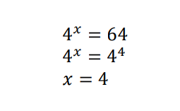

| Home | Introdução | Funções Exponenciais | Funções Modulares | Função Geral, Canônica e Fatorada | Logaritimos | Autoavaliação |
O criador do conceito "logaritmo" foi o matemático, físico e astrônomo, John Napier (1550-1617), segundo ele, criou-se uma necessidade de transformar as equações muito difíceis que, envolvessem multiplicação e divisão, em algo mais simples que apresetasse a adição e a subtração. Napier se inspirou nas propriedades das equações de mesma base para criar a ideia do logaritmo. De uma maneira simples, a operação logaritmo é caracterizada pela expressão: "loga b = x ⇔ ax = b". Onde:
Exemplo: Sabemos que 23 = 8 então, falamos que log2 8 = 3 (Lê-se o logaritmo de 8 na base 2 é 3). Isso quer dizer que a resposta de um logaritmo é um expoente.
Exemplo 2: Quanto é log4 64 ? Ou seja, qual o expoente do 4 para dar 64?

Para resolvermos esta equação, fatoramos o 64, o que nos resultou em 43, depois disso, eliminamos as bases iguais e concluímos que x = 3. Então, o log4 64 é x = 3.
Ainda não tenho uma opinião concreta sobre os logaritmos pois não conseguimos ver tudo o que tinhamos para ver sobre eles, aprendemos apenas o básico sobre eles, mas diante do que já sabemos, eu posso dizer que é um dos conteúdos mais confusos que já vi, principalmente pois temos que realizar pequenas contas, algumas não tão simples, para encontar o valor de "x", sem contar que eu sempre me confundo com os nomes de cada elemento e acabo trocando eles. Porém, espero que eles não fiquem ainda mais complicados.